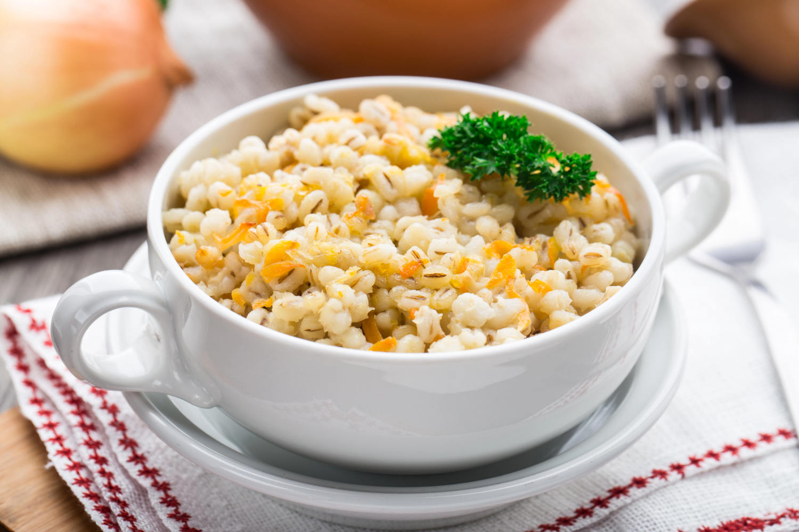
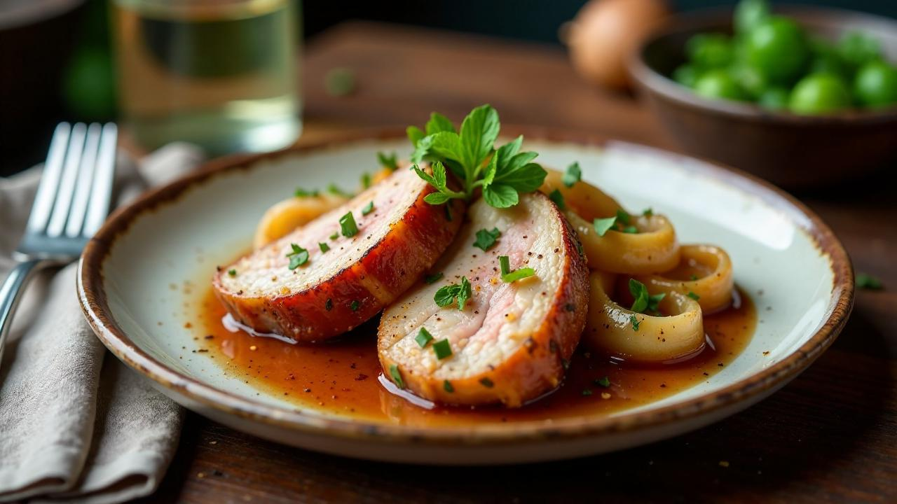
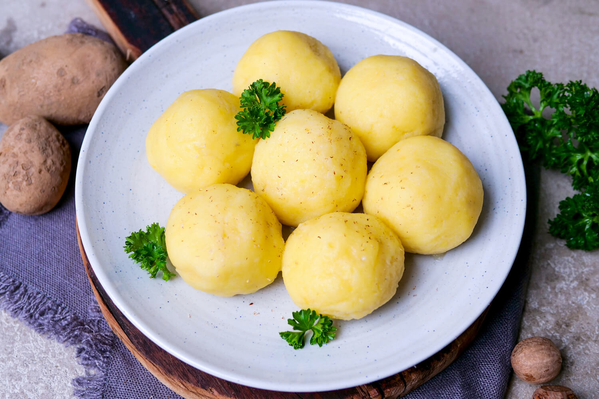

Getreide im Landkreis Erding
Landwirtschaft
Getreide ist eine der wichtigsten Kulturpflanzen in der bayerischen Landwirtschaft. Es wird auf großen Ackerflächen angebaut und bildet die Grundlage für viele Lebensmittel. Außerdem ist Getreide wichtig für die Fruchtfolge und trägt zu einer
nachhaltigen Bodenbewirtschaftung bei.
Konsum
Getreideprodukte sind ein wichtiger Bestandteil der Ernährung. Brot, Semmeln, Nudeln und Müsli werden in Bayern regelmäßig gegessen und gehören zum Alltag vieler Menschen.
Getreide in Erding
Anbaufläche: ca. 987.500 Hektar.
Durchschnittsertrag: ca. 6-7 Tonnen pro Hektar.
Bedeutung: Wichtigste Ackerfrucht, Grundnahrungsmittel.
Besonderheiten: Grundlage für Brot, Futter und Bier.
Anbau des Getreides
In Bayern wird vor allem Wintergetreide wie Winterweizen, Wintergerste und Roggen angebaut. Die Aussaat erfolgt meist im Herbst. Sommergetreide wird im Frühjahr gesät. Getreide braucht geeignete Böden, ausreichend Wasser, Nährstoffe und Sonnenlicht.
Vom Säen bis zur Ernte vergehen mehrere Monate.
Ernte des Getreides
Die Getreideernte findet je nach Art und Wetter zwischen Juli und August statt. Geerntet wird mit Mähdreschern, die die Körner von den Halmen trennen. Wichtig ist, dass das Getreide trocken ist, um Lagerprobleme zu vermeiden.
Verarbeitung
Nach der Ernte wird das Getreide gereinigt und gelagert. Ein Teil wird zu Mehl verarbeitet, ein anderer zu Futtermitteln. Außerdem dient Getreide als Rohstoff für Produkte wie Brot, Nudeln, Bier oder Frühstücksflocken.
Transprot
Getreide wird meist mit Traktoren, Anhängern oder LKWs transportiert. Es gelangt vom Feld zu Lagerhäusern, Mühlen, Brauereien oder Futtermittelbetrieben. Kurze Transportwege sind auch hier von Vorteil.
Zubereitung und Verzehr
Getreide wird vor allem in verarbeiteter Form verzehrt, zum Beispiel als Brot, Gebäck, Nudeln oder Brei. Je nach Produkt wird es gemahlen, gekocht, gebacken oder weiterverarbeitet.
Beispiele:
• Brot / Fladenbrot
• Nudeln / Pasta
• Reis mit Gemüse
• Risotto
• Haferflocken (Porridge)
• Müsli
Beispiel aus Erding:
Gertsenpfanne

Raps im Landkreis Erding
Landwirtschaft
Raps wird in Bayern überwiegend als Winterraps angebaut. Die Aussaat erfolgt im Spätsommer, die Ernte im Sommer des nächsten Jahres. Raps ist wichtig für die Fruchtfolge, da er den Boden durch seine tiefen Wurzeln lockert und Krankheiten bei anderen
Pflanzen reduziert.
Konsum
Rapsöl wird im Alltag häufig als Speiseöl verwendet. Es eignet sich gut zum Kochen, Braten und für Salate. Viele Menschen nutzen Rapsöl, weil es aus regionalem Anbau stammt und vielseitig einsetzbar ist.
Raps in Erding
Anbaufläche: ca. 110.000-114.000 Hektar.
Durchschnittsertrag: ca. 3,8 - 3,9 Tonnen pro Hektar.
Bedeutung: Wichtiges Fruchtfolge, Öl- und Eiweißpflanze.
Besonderheiten: wichtig für Biodiesel, Speiseöl und Imkerei.
Anbau des Rapses
Raps wird in Bayern meist als Winterraps angebaut. Die Aussaat erfolgt im August oder September. Die Pflanze braucht nährstoffreiche, lockere Böden, ausreichend Wasser und milde Temperaturen im Herbst, damit sie gut über den Winter kommt. Insgesamt
dauert der Anbau vom Säen bis zur Ernte etwa 10 bis 11 Monate.
Ernte des Rapses
Raps wird in Bayern meist als Winterraps angebaut. Die Aussaat erfolgt im August oder September. Die Pflanze braucht nährstoffreiche, lockere Böden, ausreichend Wasser und milde Temperaturen im Herbst, damit sie gut über den Winter kommt. Insgesamt
dauert der Anbau vom Säen bis zur Ernte etwa 10 bis 11 Monate.
Verarbeitung
Nach der Ernte werden die Rapssamen zuerst gereinigt und getrocknet. Anschließend kommen sie in Ölmühlen, wo sie gepresst werden. Dabei entsteht Rapsöl. Die festen Rückstände heißen Rapskuchen oder Rapsschrot und werden als eiweißreiches Tierfutter
verwendet. Ein Teil des Rapsöls wird weiter zu Biodiesel verarbeitet.
Transprot
Der Transport erfolgt meist regional. Die Rapssamen werden mit Traktoren oder LKWs vom Feld zu Lagerhallen oder Ölmühlen gebracht. Rapsöl und Rapsprodukte werden anschließend zu Lebensmittelbetrieben, Tankstellen oder in den Handel transportiert.
Kurze Transportwege sind in Bayern wichtig, um Kosten und Umweltbelastung zu reduzieren.
Zubereitung und Verzehr
Raps wird nicht direkt gegessen, sondern zu Rapsöl verarbeitet. Das Öl wird in der Küche zum Kochen, Braten und Backen verwendet. Für Salate wird oft kaltgepresstes Rapsöl genutzt, da es mild schmeckt.
Beispiele:
• Rapsöl
• Mayonnaise
• Dressings
• Margarine
Beispiel aus Erding:
Schweinsbraten mit Rapsöl

Kartoffelm im Landkreis Erding
Landwirtschaft
Kartoffeln sind eine wichtige Kulturpflanze in der bayerischen Landwirtschaft. Sie werden auf vielen Ackerflächen angebaut und sind ein bedeutendes Grundnahrungsmittel. Kartoffeln sind gut für die Fruchtfolge, dürfen aber nicht jedes Jahr auf
demselben Feld angebaut werden.
Konsum
Kartoffeln sind ein wichtiges Grundnahrungsmittel. Sie werden in vielen Haushalten regelmäßig gegessen, zum Beispiel als Salzkartoffeln, Bratkartoffeln oder Pommes. Sie sind vielseitig und sättigend
Getreide in Erding
Anbaufläche: ca. 40.000- 45.000 Hektar.
Durchschnittsertrag: ca. 40-45 Tonnen pro Hektar.
Bedeutung: Wichtigste Speise/ Stärkepflanze, Grundnahrungsmittel.
Besonderheiten: Vielseitig, verwendbar, regionaler Anbau.
Anbau der Kartoffeln
In Bayern werden Kartoffeln im April gepflanzt. Dazu legt man Saatkartoffeln in den Boden. Die Pflanzen brauchen lockere, nährstoffreiche Böden, genügend Wasser und Wärme. Vom Pflanzen bis zur Ernte dauert es etwa 4 bis 5 Monate.
Ernte der Kartoffelm
Die Ernte beginnt je nach Sorte im Juni (Frühkartoffeln) und dauert bis September oder Oktober. Geerntet wird mit Kartoffelrodern, die die Knollen aus der Erde holen. Dabei müssen die Kartoffeln vorsichtig behandelt werden, um Schäden zu vermeiden.
Verarbeitung
Nach der Ernte werden die Kartoffeln sortiert, gereinigt und gelagert. Ein Teil wird direkt verkauft, andere Kartoffeln werden weiterverarbeitet, zum Beispiel zu Pommes, Chips, Püree oder Kartoffelstärke.
Transport
Kartoffeln werden meist regional transportiert. Sie kommen mit Traktoren oder LKWs vom Feld zu Lagerhallen, Verarbeitungsbetrieben oder direkt in den Handel. Kurze Transportwege sind wichtig, um die Qualität zu erhalten.
Zubereitung und Verzehr
Kartoffeln werden vor dem Essen gewaschen, geschält oder mit Schale gekocht. Man kann sie kochen, braten, backen oder frittieren. Sie werden frisch zubereitet oder als verarbeitetes Produkt verzehrt.
Beispiele:
• Kartoffelstärke
• Kartoffelsalat
• Pommes
Beispiel aus Erding:
Kartoffelknödel
